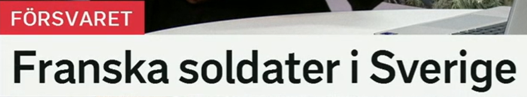
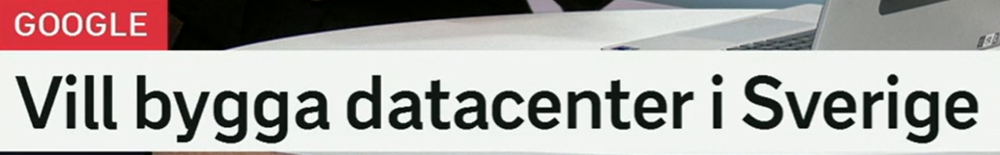
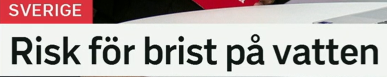
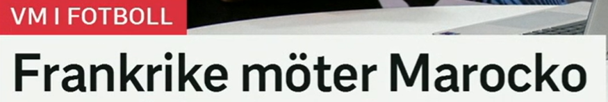

Snipaste_2026-07-09_20-12-49.png
Attackerna fortsatte i natt
袭击在昨夜继续。
SVT Rubriker · Svenska ord
2026-07-09｜词汇扩展、同义词与高频表达。基于本文件夹内 5 张 SVT 新闻标题截图整理，重点练习标题里的核心动词、名词短语和新闻高频结构。
数据来源：本文件夹内 SVT 标题截图
袭击在昨夜继续。
法国士兵在瑞典。
想在瑞典建设数据中心。
有缺水风险。
法国对阵摩洛哥。
中文：袭击在昨夜继续。
标题大意：强调某一组袭击行为没有停止，而是在夜间继续发生。标题只说明“继续”这一状态，不展开袭击细节。
含义：袭击、攻击；标题中 `attackerna` 是复数定形，表示“这些/那些袭击”。
变形：en attack, attacken, attacker, attackerna。
近义词：angrepp, anfall。反义表达：försvar, skydd。
高频搭配：en militär attack, en cyberattack, attack mot civila, utsättas för en attack。
场景：新闻、军事、安全、网络安全报道中非常高频。
含义：继续；标题中 `fortsatte` 是过去式，说明“继续了”。
变形：fortsätter, fortsatte, fortsatt。常接动词不定式：fortsätta att göra något。
近义词：pågå, hålla på, gå vidare。反义词：sluta, upphöra, avbryta。
高频搭配：fortsätta öka, fortsätta falla, fortsätta samtalen, fortsätta arbetet。
场景：新闻标题常用来表达趋势延续，语气简洁而中性。
含义：昨夜、今天凌晨这一夜。瑞典语里 `natt` 指夜晚，`i natt` 常根据说话时间理解为“昨晚/今夜”。
近义表达：under natten, sent i går kväll, tidigt i morse。
高频搭配：hände i natt, skedde i natt, stormade i natt, föll i natt。
场景：新闻快讯、天气、突发事件中很常见。

中文：法国士兵在瑞典。
标题大意：这是一个省略动词的新闻标题，用“形容词 + 名词 + 地点”直接制造信息焦点。标题没有说明他们为什么在瑞典。
含义：法国的、法国人的；标题中 `franska` 修饰复数名词 `soldater`。
变形：fransk, franskt, franska。人称名词是 `fransman`、`fransyska`，国家名是 `Frankrike`。
近义表达：från Frankrike。相关词：fransktalande, franskledd。
高频搭配：franska myndigheter, franska regeringen, franska landslaget, franska soldater。
场景：新闻里常用于国家、政府、军队、球队、企业等修饰。
含义：士兵、军人；标题中 `soldater` 是复数不定形。
变形：en soldat, soldaten, soldater, soldaterna。
近义词：militär, försvarspersonal。反义或对照：civil, civilperson。
高频搭配：utländska soldater, svenska soldater, skicka soldater, soldater på plats。
场景：军事、防务、国际新闻中常见，比 `militär` 更具体。
含义：防务、防御、国防；截图红色栏目词 `FÖRSVARET` 表示“国防/防务领域”。
变形：ett försvar, försvaret。动词是 `försvara`，形容词相关表达如 `försvarspolitisk`。
近义表达：militärt försvar, skydd。反义：attack, angrepp。
高频搭配：svenska försvaret, stärka försvaret, försvarsminister, försvarsbudget。
场景：正式新闻、政治、军事语境。

中文：想在瑞典建设数据中心。
标题大意：截图栏目显示 Google；标题本身省略主语，用 `vill + 动词原形` 表达计划或意愿。
含义：想要、希望；标题中 `vill` 后接动词原形 `bygga`。
变形：vill, ville, velat。注意现在式 `vill` 不加 `-er`。
近义词：önska, planera att, ha som mål att。反义表达：vägra, avstå från。
高频搭配：vill ha, vill se, vill stoppa, vill bygga, vill införa。
场景：新闻标题里常表示政府、企业、政党提出的目标或主张。
含义：建设、建造；也可抽象表示“建立”。
变形：bygger, byggde, byggt。名词：bygge, byggnad, byggande。
近义词：uppföra, anlägga, skapa。反义表达：riva, avveckla。
高频搭配：bygga hus, bygga ut, bygga om, bygga datacenter, bygga relationer。
场景：基础设施、城市建设、企业投资，也可用于抽象关系和系统。
含义：数据中心；标题中是复数或同形用法，瑞典语常见外来复合词。
变形：ett datacenter, datacentret/datacenteret, datacenter, datacentren/datacenterna。
近义表达：serverhall, datahall。相关词：server, molntjänst, elförbrukning。
高频搭配：bygga datacenter, driva datacenter, energikrävande datacenter, nytt datacenter。
场景：科技、能源、投资、地方发展新闻。

中文：有缺水风险。
标题大意：强调瑞典语中非常典型的结构 `risk för + 名词`。标题说明存在风险，但不说明具体地区或原因。
含义：风险、危险可能性；标题中 `risk för` 表示“有……的风险”。
变形：en risk, risken, risker, riskerna。
近义词：fara, hot, osäkerhet。反义词：säkerhet, trygghet。
高频搭配：risk för brand, risk för översvämning, ökad risk, minska risken。
场景：天气、公共安全、健康、经济报道中极常见。
含义：短缺、缺乏；标题中 `brist på vatten` 是“缺水”。
变形：en brist, bristen, brister, bristerna。常用介词：brist på。
近义词：underskott, avsaknad, knapphet。反义词：överskott, tillgång。
高频搭配：brist på personal, brist på pengar, brist på mat, vattenbrist。
场景：社会问题、供应链、医疗、自然资源新闻。
含义：水；标题中指生活或自然资源意义上的水。
变形：ett vatten, vattnet。复数可作 `vatten`，但日常更常作不可数名词。
近义或相关词：dricksvatten, grundvatten, vattennivå。反义或对照：torka, torrhet。
高频搭配：brist på vatten, spara vatten, förorena vatten, vattennivån sjunker。
场景：天气、环境、市政、公共卫生新闻。

中文：法国对阵摩洛哥。
标题大意：体育新闻中 `möter` 不只是“见面”，常表示“迎战、对阵”。标题没有说明比赛结果。
含义：遇见、会见、迎战；标题中是体育语境里的“对阵”。
变形：möter, mötte, mött。
近义词：träffa, ställas mot, spela mot。反义或对照：undvika, missa。
高频搭配：möta ett lag, möta kritik, möta motstånd, möta pressen。
场景：体育、政治采访、社会争议里都高频。语境决定它是“见面”还是“面对”。
含义：världsmästerskap，世界锦标赛/世界杯。截图栏目 `VM I FOTBOLL` 是“足球世界杯/足球世锦赛”。
相关表达：fotbolls-VM, VM-final, VM-kval, landslag。
高频搭配：spela VM, vinna VM, gå vidare i VM, åka ur VM。
场景：体育新闻中极常见，瑞典语新闻很爱用缩写。
含义：Frankrike 是法国，Marocko 是摩洛哥。国家名通常不加冠词。
相关形容词：fransk, marockansk。相关人群名词：fransman/fransyska, marockan。
高频搭配：i Frankrike, från Marocko, Frankrikes landslag, marockanska spelare。
场景：国际、体育、旅游、政治新闻常用。
| 瑞典语 | 中文意思 | 高频搭配 | 近义表达 | 例句 | 记忆提示 |
|---|---|---|---|---|---|
| attack | 袭击、攻击 | attack mot, flera attacker | angrepp, anfall | Attacken skedde i natt.｜袭击发生在夜间。 | 英语 attack 同源，瑞典语复数常见 `attacker`。 |
| fortsätta | 继续 | fortsätta att öka, fortsätta samtalen | pågå, hålla på | Arbetet fortsätter i dag.｜工作今天继续。 | `fortsätter` 是现在，`fortsatte` 是过去。 |
| i natt | 昨夜、今夜 | hände i natt, föll i natt | under natten | Det blåste hårt i natt.｜昨夜风很大。 | 新闻快讯的时间状语，放句尾很自然。 |
| fransk | 法国的 | franska soldater, franska myndigheter | från Frankrike | Franska myndigheter varnar.｜法国当局发出警告。 | 修饰复数和定形常用 `franska`。 |
| soldat | 士兵 | skicka soldater, utländska soldater | militär | Soldaterna övar i området.｜士兵在该地区演练。 | `soldater` 是复数不定形。 |
| försvar | 防务、国防 | stärka försvaret, svenskt försvar | skydd, militärt försvar | Försvaret behöver mer pengar.｜国防需要更多资金。 | `försvaret` 常指国防系统。 |
| vilja | 想要、希望 | vill bygga, vill se, vill stoppa | önska, planera att | Partiet vill ändra lagen.｜该党想修改法律。 | `vill + 动词原形` 是标题高频结构。 |
| bygga | 建设、建造 | bygga ut, bygga om, bygga datacenter | uppföra, anlägga | De bygger en bro.｜他们在建一座桥。 | 可具体建房，也可抽象建立关系。 |
| datacenter | 数据中心 | nytt datacenter, driva datacenter | serverhall, datahall | Datacentret kräver el.｜数据中心需要电力。 | 科技新闻常见复合外来词。 |
| risk | 风险 | risk för brand, ökad risk | fara, hot | Det finns risk för regn.｜有下雨风险。 | `risk för + 名词` 直接对应“……风险”。 |
| brist | 短缺 | brist på vatten, brist på personal | underskott, knapphet | Det råder brist på läkare.｜医生短缺。 | `brist på` 是固定介词搭配。 |
| vatten | 水 | spara vatten, rent vatten | dricksvatten, grundvatten | Vi måste spara vatten.｜我们必须节约用水。 | 通常作不可数，定形 `vattnet`。 |
| möta | 遇见、对阵、面对 | möta kritik, möta ett lag | träffa, spela mot | Norge möter Sverige.｜挪威对阵瑞典。 | 体育语境优先理解为“对阵”。 |
| VM | 世界锦标赛/世界杯 | VM-final, spela VM | världsmästerskap | Laget går vidare i VM.｜球队在世界杯晋级。 | 瑞典语新闻喜欢用缩写。 |
| i Sverige | 在瑞典 | bo i Sverige, bygga i Sverige | inom Sverige | Företaget växer i Sverige.｜公司在瑞典发展。 | 国家前用介词 `i`。 |
| på vatten | 对水/水的短缺结构中用法 | brist på vatten, tillgång på vatten | vattenbrist | Det finns brist på vatten.｜存在缺水。 | `brist på` 后接缺少的东西。 |
| mot | 针对、对阵、朝向 | attack mot, spela mot | gentemot, motståndare | De spelar mot Marocko.｜他们对阵摩洛哥。 | 新闻和体育都很高频。 |
| på plats | 在现场、到位 | soldater på plats, polis på plats | där, närvarande | Polisen är på plats.｜警方在现场。 | 本组由 `soldater` 延伸，突发新闻常见。 |
标题常省略主语，依靠栏目词或图片上下文补足。例如 `Vill bygga datacenter i Sverige`，结构是 `vill + 动词原形 + 宾语/地点`。
`Franska soldater i Sverige` 没有动词，但信息足够紧凑。类似结构还有 `Nya attacker`, `Höga priser`, `Brist på motgift`。
`risk för + 名词` 表示“……风险”；`brist på + 名词` 表示“缺少……”。这两个结构在天气、医疗、市政报道中都很常见。
`fortsätta` 常和增长、下降、攻击、谈判搭配：`fortsätta öka`, `fortsätta falla`, `attackerna fortsatte`。
`franska soldater`, `svenska Saab`, `ryska idrottare` 这类结构高度新闻化。注意形容词随名词形式变化。
`Frankrike möter Marocko` 中 `möter` 是“对阵”。同一个词也可以表示“会见”和“面对批评”：`möta pressen`, `möta kritik`。
1. fortsätta 2. brist 3. risk 4. soldat 5. möta 6. datacenter
1. 继续；2. 短缺；3. 风险；4. 士兵；5. 遇见/对阵/面对；6. 数据中心。
1. Det finns risk ___ brand.
2. Sjukhuset har brist ___ personal.
3. Sverige möter Danmark ___ finalen.
4. Företaget vill ___ ett datacenter.
1. för 2. på 3. i 4. bygga
1. 袭击在夜间继续。
2. 有缺水风险。
3. 法国对阵摩洛哥。
4. 公司想在瑞典建设数据中心。
1. Attackerna fortsatte under natten / i natt.
2. Det finns risk för brist på vatten.
3. Frankrike möter Marocko.
4. Företaget vill bygga datacenter i Sverige.
提示：标题瑞典语追求短、硬、信息密度高。复习时可以先背固定搭配，再回到整句标题里感受它的新闻语气。